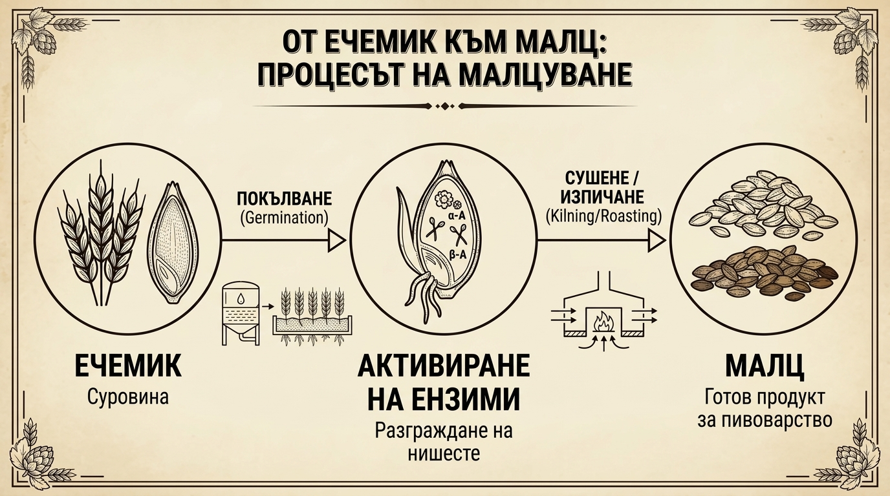

Малцът: Душата на бирата и защо да го купуваме готов
Ако водата е тялото на бирата, то малцът е нейната душа. Той осигурява захарите за ферментация, цвета, пяната, плътността и основните вкусови профили (хляб, бисквити, карамел, ядки, кафе, шоколад).

Защо домашното малцуване от суров ечемик НЕ е добра идея?
Процесът на малцуване в специализираните малцерии включва три строги и прецизно контролирани етапа:
- Накисване (Steeping): Зърното абсорбира вода до достигане на необходимото ниво на влажност (около 42–45%).
- Покълване (Germination): Зърното покълва при точна температура (12–16°C) и влажност, активирайки естествените ензими (алфа- и бета-амилаза).
- Сушене и изпичане (Kilning): Кълновете се спират чрез контролирано изсушаване с топъл въздух, за да не изконсумират разработените захари.
За домашния пивовар опитът да малцува необработен ечемик или пшеница от фермерски пазар почти винаги завършва с неуспех. Изискват се специални индустриални сушилни, прецизен температурен влагоконтрол и опит. Неравномерно покълналото зърно води до ниска диастатична сила (липса на достатъчно ензими), риск от плесени и недостатъчно ферментируеми захари.
Препоръка: Винаги купувайте готов, професионално проектиран пивоварен малц от специализираните магазини за домашно пивоварство (световнопризнати марки като Weyermann, Castle Malting, Crisp, Dingemans).
Смилане на малца (Crushing / Milling) и трайност
За да могат ензимите да превърнат нишестето от ендосперма в захари по време на захарването (маш-ин), малцовите зърна трябва да бъдат натрошени предварително.
Правилото на смилането:
- Не трябва да става на брашно! Люспата на зърното трябва да остане максимално цяла, тъй като тя служи като естествен филтър при прецеждането и промиването (sparging). Вътрешността (ендоспермът) трябва да се натроши на 2 до 4 части.
- Ако смелите малца на брашно, кашата ще се задръсти при филтрацията (т.нар. stuck mash), а от разкъсаните люспи ще се извлекат стипчиви танини.
Трайност на малца:
- Цяло зърно (Немляно): В сухо, прохладно и защитено от влага и гризачи място издържа над 1 до 2 години без загуба на ензимна активност.
- Млян малц: Тъй като вътрешността е изложена на кислород и влага от въздуха, мленият малц започва да се окислява бързо. Препоръчва се да се използва в рамките на 2 до 4 седмици след смилането. Ако се налага по-дълго съхранение, го запечатайте вакуумно в плътен плик.
Различните типове малц и тяхното приложение
Пивоварните малцове се разделят на три основни категории според начина им на изпичане и ролята им в рецептата:
1. Базови малцове (Base Malts) – Основата (80% – 100% от рецептата)
Те съдържат най-висока ензимна активност (диастатична сила) и осигуряват основната част от ферментируемите захари:
- Pilsner Malt: Най-светлият малц. Дава свеж, чист, леко хлебен вкус. Използва се за Pilsner, Светли лагери, Saison, Kölsch.
- Pale Ale Malt: Леко по-изпечен от Pilsner. Придава плътен ядков и бисквитен оттенък. Използва се за Pale Ale, IPA, Porter, Stout.
- Vienna Malt: Кехлибарен цвят с изразен аромат на препечена коричка хляб. Използва се за Vienna Lager, Märzen, Amber Ale.
- Munich Malt: По-тъмен и наситен, носи малцова сладост и карамелено-бисквитени нотки. Използва се за Bock, Dunkel, Тъмни ейлове.
2. Карамелени / Кристални малцове (Caramel / Crystal Malts) – (5% – 15% от рецептата)
Тези малцове са специално озахарени още вътре в зърното по време на изпичането. Внасят неферментируеми захари, карамелена сладост, цвят и устойчивост на пяната:
- Carahell / Carapils: Светли карамелени малцове. Добавят тяло и трайна пяна без да променят драматично цвета. За Pilsner, Session Ales, Pale Ale.
- Caramunich / Crystal (60–120 EBC): Кехлибарени до червеникави малцове. Дават нотки на карамел, сушени плодове и мед. За Amber Ale, Bock, Dunkel, West Coast IPA.
3. Препечени и тъмни малцове (Roasted / Dark Malts) – (2% – 10% от рецептата)
Изпечени са при много високи температури. Не съдържат активни ензими:
- Chocolate Malt & Roasted Barley: Придават тъмнокафяв до черен цвят и силни вкусове на изпечено кафе, черен шоколад и препечена коричка. За Stout, Porter.
- Carafa Special (De-bittered): Тъмен малц с премахнати люспи, който дава наситен черен цвят без грубата изпечена горчивина. За Schwarzbier, Dark Lager.
Количества малц за 10 литра бира и контрол на алкохолността
Количеството малц в рецептата пряко определя началното относително тегло (Original Gravity – OG) и потенциалния алкохолен процент (ABV).
За 10 литра домашна бира (при стандартна пивоварна ефективност от около 72%) са необходими следните ориентировъчни количества:
| Категория бира | Очаквано ABV | Начална плътност (OG) | Общо малц за 10 л | Препоръчителен състав / Профил |
|---|---|---|---|---|
| Нискоалкохолна / Session | 3.5% – 4.2% | 1.035 – 1.042 | 1.8 – 2.2 кг | Pilsner / Pale + Carahell или овесени ядки (Flaked Oats). Изисква по-висока температура на захарване (68°C), за да не стане бирата водниста. |
| Стандартна / Средноалкохолна | 4.5% – 5.5% | 1.045 – 1.055 | 2.3 – 2.8 кг | Базов малц (Pilsner / Pale) + Карамелен или пшеничен малц. Златната среда за Pilsner, Pale Ale, Wheat бира. |
| Силна / Високоалкохолна | 6.5% – 8.5%+ | 1.065 – 1.085+ | 3.2 – 4.5 кг | Базов + Специален + Карамелен малц. За Bock, Imperial Stout, Belgian Tripel, Barleywine. |
Как малцът и захарването управляват захарите, тялото и вкуса
В зависимост от комбинацията на малцове и температурата на захарване (маш-ин пауза), вие управлявате типа създадени захари:
-
За сухо тяло и по-висок алкохол (Сух завършек):
Използвайте предимно чист Pilsner или Pale Ale малц и захарвайте на по-ниска температура (64–65°C). При тази температура доминира бета-амилазата, произвеждаща лесно ферментируема малтоза. -
За плътно тяло и малцова сладост:
Добавете 5–10% карамелени малцове (Carahell, Caramunich) или ечемичени/овесени ядки и захарвайте на по-висока температура (68–69°C). Тук активирате алфа-амилазата, която оставя неферментируеми декстрини.